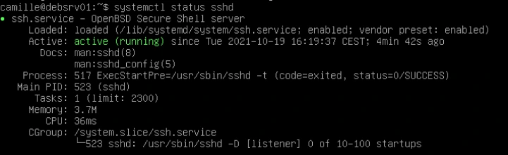
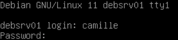
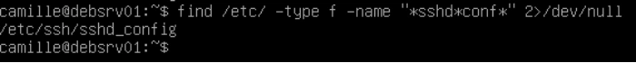
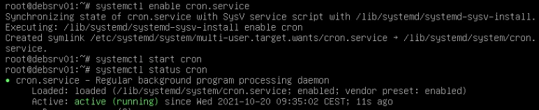
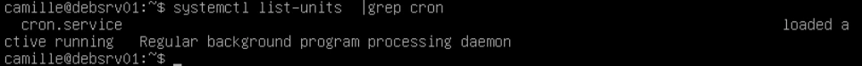
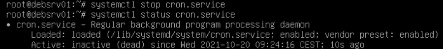
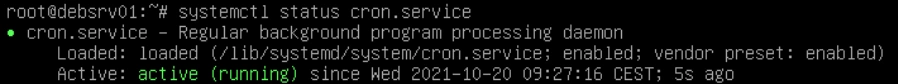
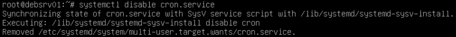

Transcription intégrale structurée du support et de ses instructions. La mise en forme est adaptée au Web ; les compléments pédagogiques restent dans leur onglet distinct.
Administration Debian GNU/Linux
TP du Module 03 – Démarrage d’une distribution Debian
Avant de démarrer ce TP, il convient d’avoir suivi les vidéos des modules 1 à 3 et d’avoir réalisé les TP proposés.
Durée estimée
25 à 45 minutes
Trouver les fichiers relatifs au fonctionnement du service (nom et emplacement) :
Ouvrir une session avec votre utilisateur standard
Conf systemd ligne 'Loaded'
Binaire en ligne Process
type f car nous cherchons un fichier, pas un dossier *sshd*conf* cherche un fichier dont le nom contient à la fois le nom du service et le mot conf, habituel dans des fichiers de ce type.

systemctl status sshd
# Unité : /lib/systemd/system/ssh.service
# Binaire : /usr/sbin/sshd

find /etc/ -type f -name "*sshd*conf*" 2>/dev/null
/etc/ssh/sshd_configAdministration Debian GNU/Linux
Lister les services avec systemctl puis filtrer sur le mot cron.
Le résultat montre un service activé
Arrêt du service avec la commande systemctl stop.
Vérification du résultat avec systemctl status .
Désactivation d'un service au prochain démarrage avec l'option disable de systemctl
Restaurer les paramètres par défaut de démarrage du démon cron systemctl enable pour activer au démarrage, systemctl start pour démarrer manuellement le service sans devoir redémarrer le serveur.

systemctl enable cron.service
systemctl start cron
systemctl status cron
systemctl list-units | grep cron
systemctl stop cron.service
systemctl status cron.service
systemctl status cron.service
systemctl disable cron.servicesystemctl stop cron.service